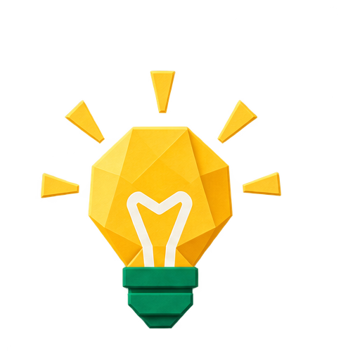
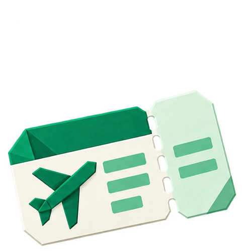

フィリピンは東南アジアの中でも物価が安く、ローカル食堂の定食は400〜600円程度から。一方でボラカイ・エルニドなどの人気リゾートエリアはホテル・アクティビティの価格上昇が続き、島から島への移動には国内線代もかさむ。英語が通じるぶん、現地ツアーの交渉や情報収集がしやすいのは大きなメリット。

節約ポイント・ローカル食堂「カレンデリア」の利用で食費を大幅節約
・Grabアプリで配車すればぼったくりなしで安心
・島間移動は早期予約でLCC国内線が数千円で取れることも
フィリピンではローカル食堂や交通は現金払いが基本ですが、ホテルやモールではクレジットカードも広く使えます。現地通貨ペソへの両替は空港より市内の両替所のほうがレートが良い場合が多く、少額を空港で崩してから市内で両替するのがおすすめです。
ホテルやレストランなどカードが使える場所はカード払いする前提で、屋台・市場・交通機関など現金が必要になる分の目安です。足りなくなっても、なら現地ATMで気軽に引き出せて安心です。
海外でクレジットカードを使うたびに不正利用のリスクは高まります。筆者自身も海外渡航後に2回不正利用を経験したことをきっかけに、現在は海外ではWiseカードをメインに使うようにしています。チャージした分しか使えないため万が一の際も被害が限定的で、旅好きの友人たちの間でも最近かなり普及してきています。
日本〜フィリピン間は直行便で約4.5〜5時間。成田・羽田・関西から複数の航空会社が運航しており、LCCを活用すれば往復3〜6万円台での旅行も可能です。マニラだけでなくセブへの直行便も多く、南部の島々中心の旅なら乗り継ぎなしでアクセスできます。
航空券を比較・予約するなら、ほぼこれ一択！スカイスキャナーの公式サイトはこちら



予約タイミングの目安・クリスマス〜正月・ホーリーウィークは2〜3ヶ月前から価格が上がりやすい
・台風シーズン（7〜10月）は直前でも安値が出ることがある
・複数サイトを比較して最安値を見つけよう
フィリピンはマニラやセブの都市部と、ボラカイ・パラワンなどのリゾート島で宿の性格が大きく異なります。都市部は治安の面で地区差が大きいため、値段の安さだけで選ばず、モールや大通りに近い立地を選ぶと安心。特に夜着の日程では初日くらい治安の落ち着いたエリアに泊まりたいところです。島のリゾートは事前予約とアクセス（船・国内線）の確認を忘れずに。
マニラは治安の良いマカティ・BGCエリアが安心。ボラカイはステーション1が高級寄り、ステーション2は賑やかで飲食店が多い。エルニドは町の中心（タウンプロパー）が便利だが、リゾート島に直接宿泊する選択肢もある。
航空券・ホテル・SIM・持ち物まで全部まとめてチェック。
30カ国以上を旅した管理人が実体験をもとに作った完全版持ち物リストもあります。